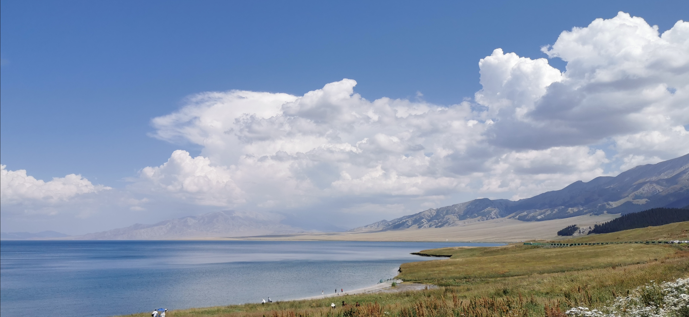

临近春节，扫房子，翻出几年前从学校顺走一只 U 盘，打开看见自己从前写的一篇如今看来有些无病呻吟的散文，觉得挺有趣。又恰逢家乡下小学，与此文切题，遂把它当作一篇博客更新出来。无甚意义，仅供诸君一笑。
一觉醒来，天边竟然已经开始飘起了银白的碎屑。北京的雪总是来去匆匆，不像天山脚下的鹅绒一般的雪花，一旦落下来便要逗留好几日，他们仿佛是经受不住人间的炽热，融化在秋冬交替时节的干枯的银杏树下，给光洁的大地裹上一层薄而透明的纱。
时间总喜欢这样，让人觉得漫长却恍惚，好容易挤出一点喘息的罅隙，便又是一年到头，觉察之余，只得叹息。常常想起小时候的我，常怪时间走的太从容，总是慵慵懒懒、不紧不慢，希望能一瞬间长大，从此不再有烦恼……
一抬头从回忆中跌撞出来，黑板上白色笔迹在眼前逐渐明晰，真真儿像做梦一样。这是在和一的第三年。时光一分一秒，一点一滴地融化，迫不及待地渗入银杏叶落之处，归于宁静。
那年，刚来和一。最期待的事情其实还是外出。家住本地的同学永远也不会体会到这种情感，那是一种走出校门，到外面看看的渴望。外出一贯是两周一次的，凡是要外出的周末，一整周上学的日子都洋溢着期待。学校外面的世界，一切都是那么的有趣，五彩斑斓的，充满了难以抗拒的吸引力。走出校门的刹那，自在充满四肢百骸，只是随着性子走一走，仿佛喧嚷的尘世任我流连。三角洲陈旧的掉了些漆的红绿灯一闪一闪，物美门前冒着热气的煎饼果子被烤得滋滋作响。天光正明，黄澄澄的银杏叶在头顶很近的枝上飘摇，哪怕只是校门口的新疆饭馆里再平常不过的一盘炒面，也让人觉着散发着一股安心的生活的香。渐渐地，我意识到自己纯粹只是喜欢出去走一走，这大概是一个离开家乡的人，因为找不到熟悉的事物而不安，于是寻得的一种消除焦虑方法罢了。
一次又一次，出入校门的脚步声中，我度过了在北京的第一年，难掩的快乐融化了那年的一场又一场来去匆匆的雪。
原以为，接下来的三年也会在一次次的出门进门里，随着几场急促却渺小的雪一起渗入地下。突如其来的噩耗却冷不丁地往这本应该平静如水的岁月里投入了一颗石子，激起层层涟漪，一圈一圈向外荡开。

一月，疫情爆发，把沉浸在期盼春节的喜悦中的我们打了一个措手不及。本来并不起眼的“小问题”，一夜之间变得一发不可收拾。从武汉封城，到我们原定的一切外出活动全部取消，甚至是寒假延长、开学延期……全国都笼罩在了一层挥之不去的阴影之中，像是深夜里，在耳边徘徊着的蚊虫，让人烦闷却又无可奈何。
自此，长达数月之久的封闭生活开始。实况图上触目惊心的红色数字和层出不穷的疫情新消息，牵动着我们的心。看着各界人士为了这次疫情而努力，献出自己的力量，我们也在学校号召下为战疫发声。我所在的吉他社团为此录制了一首歌，名曰《你安好，我无恙》。发布在社交媒体上，收到了来自天南海北陌生人的留言，我第一次发现原来世界很大，也很近，近到呼吸彼此可闻。是的，无穷的远方，无穷的人们，都与我有关。在和一的日子不该只是苍白地沉浸于学习、考试和窗边四角的天色，我总该为他人做点什么。千千万万国人赤诚的心汇聚在一起，光亮升腾而起，可媲日月。我很高兴看到自己也可以给予一点点萤烛微光，为千里之外的同胞驱散阴霾。
暑假临近，疫情仍未平复。回家的旅程异常的艰难，这让我自初中毕业以来，又一次感受到“走出学校大门”是一件极其困难的事。从原定的六月底，推迟到七月初，再到模模糊糊的七月底。北京疫情反复未平，家乡新冠感染又起，我们所有人共同进入了一段十分艰难的“低谷期”。
好在天无绝人之路，终于，经过各方无数次的努力，我们走出了和一的校门，坐上了回家的火车。数月期盼，几日颠簸，我的双脚又踩上了熟悉的土地。然而迎接我的，却并不是温暖的怀抱——疫情原因，再加上我们属于“外来者”，于是被挡在自家门外，开始了为期 21 天的隔离。在这熟悉又陌生的家乡熬过隔离的漫长时光，新的问题随之而来——返校遥遥无期。我们只得在网课之余期待着学校的苦苦周旋，而最终踏上了归途已是九月底 。
在大巴与火车之间辗转三日，和一就在下个路口，我竟不由地泛起近乡之情怯。这是一种说不清，道不明的感觉，好像是分别多年的老友，即将见面，既期待，又担忧。熟悉的三角洲换了容颜，街口是空荡荡的风，裹挟着无依无靠的银杏叶，托起满眼萧瑟，徘徊在春华与秋实的交接处。这自古就被文人骚客们吟咏过无数次的寂寥，悄无声息地撩拨着我心中愈演愈烈的惶恐。
褐色的青石板从车窗那头缓缓映入眼帘，红色的教学楼紧随其后。又迈入和一的校门，耳边是行李箱哐当哐当的转轮声，一时间百感交集，万千思绪倏的堵在心头，剪不断，理还乱。一张张熟悉的脸庞上写满了担忧和思念；一双双疲惫的眼睛里映着喜悦和释然。
不出意外地，我们很快便被安顿妥帖。饭菜不算丰盛，却刚好果腹；宿舍不算宽敞，却恰好舒适。久违的安稳很快便抚平了我的焦虑，抽丝剥茧一般带走先前的慌张。京腔的问候，朴实而不刻意，却比冬日的暖阳更加抚慰疲惫的人。还好还好，至少你们仍是从前的模样。都说，惟有失而复得，方知此间珍贵。分别又分别，重逢再重逢，才知道自己对和一有多牵挂，和一又给自己带来了何等的温暖。她像一位母亲，在我熟睡的时候用手掌轻轻地抚过我耳边的发丝；在我启程时注视我背着行囊大步远去；在我慌张时紧紧攥住我的手；在我晚归时留一碗热汤面，散发出让人鼻酸的香……
和一的六十岁生日，落在了与我交织的短暂的时光里，缘分如此，何等难得！时光匆匆，倏尔两年。七百多个日夜里，数次的聚散，终于把你刻进了我的心扉，一笔一划，入木三分……我愿给予你一颗滚烫的心和最真诚的祝福。
岁月流驶，终有一天，我将像平常那样踏出校门，只是许久不能复返，到那时，定会有万分的不舍，难掩的离愁，但我深知，惜缘即好，切莫攀缘。我也会像无数从这扇校门里走出的和一学子一样，带着你对我的期盼，在某个远方，做一片绛红色的瓦，践行你谆谆的教诲……只是时光啊时光，你能否再慢些走？
天边的银白色终于在校门上镶了个边儿，太阳还是悄悄躲在云朵后面，漫天的白雪大概也是来为和一庆生的吧。凌乱的银杏叶终于找到了归根的地方，盖上一床棉被，化作一只蝴蝶，在这片白茫茫的世界里翻飞。校门这边的一切都静好如初，六十年来皆是如此，哪论门外沧海桑田。蓦地，我的心安稳了下来，就像无数次从那里走进来时一样，熟悉，温暖，无言。
 好啦！闲言少叙，差不多就到这里吧！
好啦！闲言少叙，差不多就到这里吧！